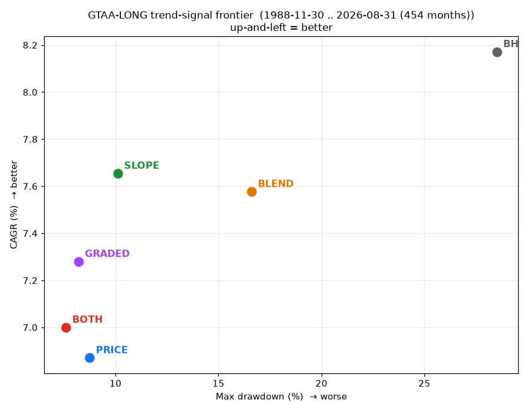

A trend-following rabbit hole · Sep 2026
There are two ways to time a market with a moving average: is price above the line, or is the line itself rising? Everyone treats them as the same thing. A companion study made me doubt that — so I ran both, Faber-style, across a diversified basket back to 1988. They’re genuinely different, and the difference turns out to be a dial you can tune, not an edge you either have or don’t.
Quick backstory. In a companion piece on Weinstein stage analysis, I noticed that two trend signals people use interchangeably don’t actually behave the same. “Price above its moving average” reacts to price, so it exits fast in a selloff — shallow drawdowns, but it whipsaws in chop. “The moving average is rising” reacts to a smoothed line that lags, so it holds through shallow dips — more return, but it exits late. Fast versus slow. Same family, different personality.
Mebane Faber’s classic tactical-allocation rule uses the first one (price vs the 10-month average) on a basket of asset classes, holding cash when a sleeve is below its line. So the natural question: on a diversified basket, does the choice of signal matter — and can the slower, slope-based one give you a genuine middle ground between buy-and-hold and a hard filter?
MA-slope timing · CAGR
Per year, 1988–2026 — 94% of buy-and-hold’s 8.2%. You barely give up return.
…at this drawdown
Worst drawdown vs buy-and-hold’s −29%. A third of the pain for nearly all the gain.
Slope beats price-cross
Decades (1990s/2000s/2010s), at the 10-month average. It loses only the sharp-reversal 2020s.
Picture the same uptrend interrupted by a two-week dip. The price cross sees price poke below the average and steps out; if the dip was noise, it buys back higher — a whipsaw. The slope rule doesn’t care about a two-week dip; the 10-month average is still grinding upward, so it holds. Now picture a real top. The price cross is already out (price broke the line weeks ago); the slope rule waits for the average itself to roll over, so it exits later and eats more of the decline. Fast and twitchy versus slow and patient. Neither is “right” — they’re two settings on a responsiveness dial, and the whole question is which setting a diversified investor wants.
My first cut used ETF baskets, which only go back to about 2007. Over that window the answer was deflating: price and slope were a near-tie, and every timing rule gave up return versus buy-and-hold while cutting drawdown. No free lunch, no clear winner between the signals — exactly the “these two rules are basically the same” result the academic literature reports on single indices. If I’d stopped there, the story would’ve been “doesn’t matter, pick either.” But 2007–2026 is a short, weird window — it happens to punish diversified and commodity exposure against US stocks. I needed more history.
So I rebuilt the basket on long-history total-return data — US large- and small-cap equity, intermediate and long Treasuries (synthesized from Fed yield data), and commodities — back to 1988. Thirty-eight years, several genuine regimes. And the picture opens right up. The slope rule now clearly beats the price cross (7.7% vs 6.9% a year, a better Sharpe too), and the timing rules trace a smooth frontier: buy-and-hold up top with its brutal −29% drawdown, then slope, graded, and the conjunction stepping down to gentler and gentler risk. The middle ground I was hoping for is right there — slope keeps 94% of the return for a third of the drawdown.
| Rule | Invested | CAGR | Sharpe | Max DD | MAR |
|---|---|---|---|---|---|
| Buy & hold | 100% | 8.2% | 0.94 | −29% | 0.29 |
| Price > MA | 69% | 6.9% | 1.09 | −9% | 0.79 |
| MA slope rising | 71% | 7.7% | 1.20 | −10% | 0.76 |
| Both (AND) | 62% | 7.0% | 1.19 | −8% | 0.92 |
| Graded (0/½/1) | 70% | 7.3% | 1.19 | −8% | 0.89 |
| Blend (50/50) | 84% | 7.6% | 1.09 | −17% | 0.46 |
long basket · 1988–2026 · up-and-left is better (more return, less drawdown)

Fair challenge — the basket holds Treasuries, and 1988–2020 was one long bond rally, which a slow slope rule would happily ride. So I tested it. I dropped the long-Treasury sleeve entirely, and re-weighted so bonds are only a third of the book. The slope edge didn’t shrink — it grew (the biggest gap of all shows up in the version with the least bonds). It also survives higher trading costs, actually widening as costs rise. So it isn’t a bond artifact and it isn’t a low-turnover trick.
There is one real boundary, though, and it’s a nice confirmation of the mechanism: the slope edge only exists with a slow enough average. At 10–12 months slope wins; at 6–8 months the ranking flips and the price cross wins. Makes sense — a fast average leaves no room for slope’s “hold through the dip” advantage, because the average itself is twitching along with price.
long basket · annual return gap (percentage points) · positive = slope wins
Split the record by decade and the personality of each signal jumps out. Slope wins the long, trending 1990s, 2000s, and 2010s. Price wins the 2020s — the era of the fastest reversals on record (the 2020 crash-and-rip, the 2022 grind), exactly where a fast exit is worth more than a patient one. This is the honest headline: which signal wins is regime-dependent. That’s not a bug in the finding — it’s the finding.
long basket · annual return gap (percentage points) · 10-month MA
Treat the trend signal as a setting, not a secret. If you’re timing a diversified basket, the first-order effect is drawdown reduction — any moving-average rule keeps most of buy-and-hold’s return while cutting the drawdown by half or more. Where you sit is your choice: the slower slope rule if you want to stay closer to buy-and-hold’s return in long trends (the better default at 10–12 months), the faster price cross if you prize shallow drawdowns and expect sharp reversals, or the graded blend of the two for a point in between. What you shouldn’t do is agonize over which is “the” trend signal, or expect either to be free money. It’s a dial. Set it to the regime.
On a diversified basket, price-cross and slope aren’t rivals — they’re two ends of a responsiveness dial that keep most of buy-and-hold’s return at a fraction of its drawdown. Slope for smooth trends, price for sharp reversals.
A Faber rule, one knob turned.$SPXTR) and small-cap ($RUTTR) equity, intermediate and long Treasuries, commodities ($SPGSCI). Trades the international/REIT breadth of the ETF version for 38 years of depth.PRICE = price > 10-mo MA; SLOPE = MA rising; BOTH = both; GRADED = 0/½/1 by how many hold; BLEND = 50% buy-and-hold + 50% price. Monthly, signals through month t earn month t+1, 5 bps/side.Credit where it’s due: Faber’s tactical rule is the jumping-off point, and it holds up — timing a diversified basket really does trade a little return for a lot less drawdown. The only refinement here is to notice that the knob on that rule — price versus slope — is worth setting deliberately rather than by habit, and that the right setting depends on whether you expect trends or reversals. One good idea, one dial turned.